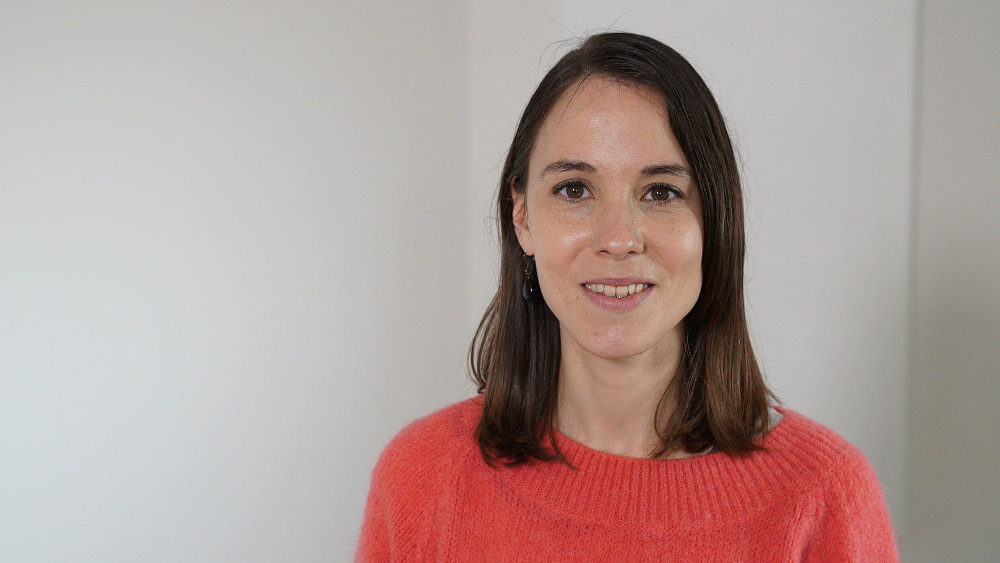

Sanne Jassogne
Logopediste – Spraak, Taal & Gebarenstem
Ik ben Sanne, geboren en getogen in Dendermonde, mama van Ellis, logopediste met een hart voor taal en kinderen. Ik specialiseer me in logopedie bij jonge kinderen met spraak-, taal- en leerproblemen. Verder werk ik voor Gebarenstem Vlaanderen, waar ik infosessies en oudercursussen geef.